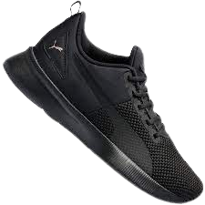

Running Shoes
O tênis Electron E oferece muito mais do que aparenta. Sua tecnologia visível destaca algumas características incríveis, como o cabedal em mesh ultra respirável, painéis sintéticos na lateral para maior suporte, e uma estética divertida e futurista. A faixa de elástico no calcanhar fica para dar aquele conforto adicional.